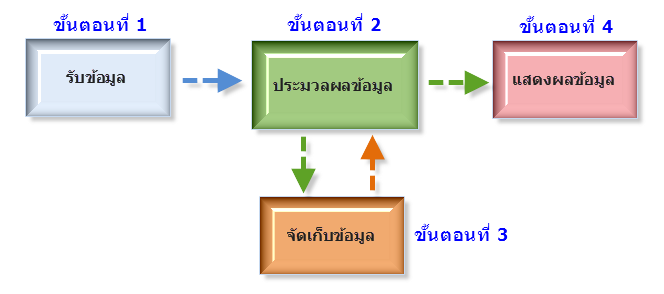

|
หลักการทำงานของคอมพิวเตอร์

การทำงานของคอมพิวเตอร์จะเริ่มจากผู้ใช้ป้อนข้อมูลผ่านทางอุปกรณ์ของหน่วยรับเข้า (Input device) เช่น คีย์บอร์ด เมาส์ ข้อมูลจะถูกเปลี่ยนให้เป็นสัญญาณดิจิทัล ประกอบด้วยเลข 0 และ 1 แล้วส่งต่อไปยังหน่วยประมวลผลกลาง เพื่อประมวลผลตามคำสั่ง ในระหว่างการประมวลผลข้อมูลจะถูกเก็บไว้ที่ (Random Access Memory: RAM) ทำหน้าที่เก็บข้อมูลจากการประมวลผลเป็นการชั่วคราว ขณะเดียวกัน อาจมีคำสั่งให้นำผลลัพธ์จากการประมวลผลดังกล่าวไปแสดงผลผ่านทางอุปกรณ์ผ่านทางอุปกรณ์ของหน่วยส่งออก เช่น จอภาพ หรือ เครื่องพิมพ์ นอกจากนี้เราสามารถบันทึกข้อมูลที่อยู่ในอนาคต โดยการอ่านข้อมูลที่บันทึกในสื่อดังกล่าวผ่านทางเครื่องขับหรือไดร์ฟ (drive) การส่งผ่านข้อมูลไปยังหน่วยต่างๆ ภายในระบบคอมพิวเตอร์จะผ่านทางระบบบัส (bus) อุปกรณ์ของหน่วยรับเข้าและส่งออก จะเชื่อมต่อกับตัวเครื่องที่เรียกว่า ซิสเต็มยูนิต (System unit) มี เคส (case) เป็นโครงยืดให้อุปกรณ์ต่างๆประกอบกัน ภายในเคสจะมีเมนบอร์ด (Mainboard) เป็นแผนวงจรหลัก โดยซีพียู หน่วยความจำ การ์ด รวมถึงอุปกรณ์ต่างๆ จะถูกต่อกับเมนบอร์ดนี้ทั้งสิ้น |
ระบบการทํางานของคอมพิวเตอร์ มีหน่วยพื้นฐาน 5 หน่วย คือ
1. หน่วยรับข้อมูล (Input Unit)
ทําหน้าที่ในการรับข้อมูลหรือคําสั่งจากภายนอกเข้าไปเก็บไว้ในหน่วยความจํา เพื่อเตรียมประมวลผลข้อมูลที่ต้องการ ซึ่งอุปกรณ์ที่ใช้ในการนําข้อมูลที่ใช้กันอยู่ตั้งแต่อดีตจนถึงปัจจุบันนั้น มีอยู่หลายประเภทด้วยกันสําหรับอุปกรณ์ที่นิยมใช้ในปัจจุบันมีดังต่อไปนี้
- คีย์บอร์ด (Keyboard)
- เมาส์ (Mouse)
- สแกนเนอร์ (Scanner)
2. หน่วยประมวลผลกลาง (Central Processing Unit)
ทําหน้าที่ในการคํานวณและประมวลผล แบ่งออกเป็น 2 หน่วยย่อย คือ
- หน่วยควบคุม ทําหน้าที่ในการดูแล ควบคุมลําดับขั้นตอนของการประมวลผล และการทํางานของอุปกรณ์ต่างๆ ภายในหน่วยประมวลผลกลาง และช่วยประสานงานระหว่างหน่วยประมวลผลกลาง กับอุปกรณ์นําเข้าข้อมูล อุปกรณ์ในการแสดงผล และหน่วยความจําสํารอง
- หน่วยคํานวณและตรรก ทําหน้าที่ในการคํานวณและเปรียบเทียบข้อมูลต่างๆ ที่ส่งมาจากหน่วยควบคุม และหน่วยความจํา
3. หน่วยความจําหลัก (Main Memory)
ทําหน้าที่ในการเก็บข้อมูลหรือคําสั่งต่างๆ ที่รับจากภายนอกเข้ามาเก็บไว้ เพื่อประมวลผลและยังเก็บผลที่ได้จากการประมวลผลไว้เพื่อแสดงผลอีกด้วย ซึ่งแบ่งออกเป็น
หน่วยความจํา เป็นหน่วยความจําที่มีอยู่ ในตัวเครื่องคอมพิวเตอร์ ทําหน้าที่ในการเก็บคําสั่งหรือข้อมูล แบ่งออกเป็น
- รอม (ROM) หน่วยความจําแบบถาวร
- แรม (RAM) หน่วยความจําแบบชั่วคราว
4. หน่วยความจํารอง (Secondedata Storage)
ทำหน้าที่จัดเก็บข้อมูลและโปรแกรมต่างๆ เพื่อนำมาใช้อีกครั้งภายหลัง แม้จะปิดเครื่องคอมพิวเตอร์ข้อมูลและโปรแกรมที่จัดเก็บไว้จะไม่สูญหาย
- Disk Drive
- Hard Drive
- CD-Rom
- Magnetic Tape
- Card Reader
5. หน่วยแสดงผล (Output Unit)
ทําหน้าที่ในการแสดงผลลัทธ์ที่ได้หลังจากการคํานวณและประมวลผล สําหรับอุปกรณ์ที่ ทําหน้าที่ในการแสดงผลข้อมูลที่ได้นั้นมีต่อไปนี้
- Monitor จอภาพ
- Printer เครื่องพิมพ.
- Plotter เครื่องพิมพ์ที่ใช้ปากกาในการเขียนข้อมูลต่างๆ ที่ต้องการลงกระดาษ
|
|
|